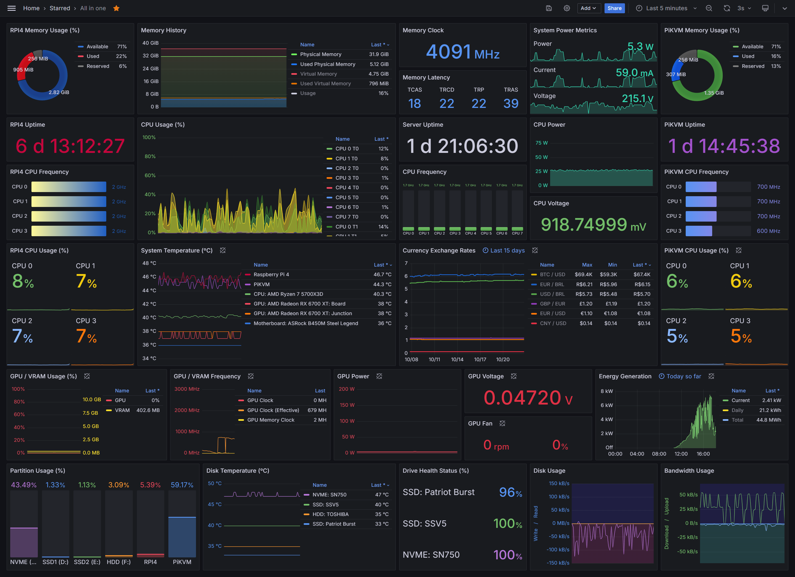

Por que usar Zabbix?
Zabbix é uma solução de monitoramento open-source poderosa que permite acompanhar em tempo real o desempenho de redes, servidores, aplicações e serviços.
- Alertas automatizados
- Interface web amigável
- Gráficos e relatórios personalizados
- Integração com sistemas de TI


Integração Grafana
A integração do Grafana com o Zabbix combina a robustez da coleta de dados do Zabbix com a visualização poderosa do Grafana. Isso traz diversos benefícios para o monitoramento de infraestrutura. Confira abaixo os principais destaques:
- Visualização Avançada
- Monitoramento Personalizado
- Agilidade na Tomada de Decisão
- Compartilhamento e Acesso Simples